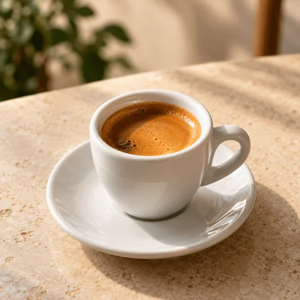
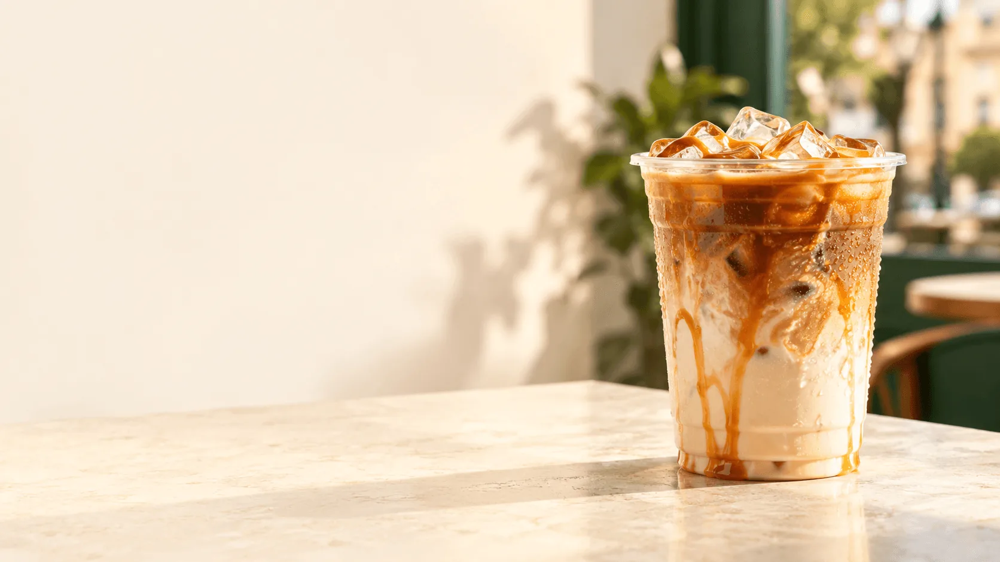
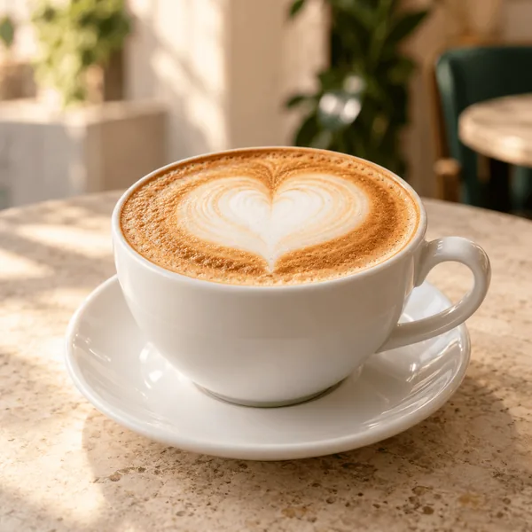
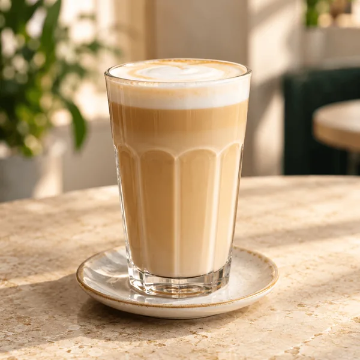

01 / Насичений
Еспресо
Маленька чашка з виразним характером. Для тих, хто любить чистий кавовий смак.
Мій кавовий характер
Обрати свою кавуПауза зі смаком
Насичений еспресо, ніжне молоко та улюблений смак. Зупинись на мить, вдихни аромат і насолодись моментом.
Знайди свій смак
Від кавової класики
до карамельного настрою.

01 / Насичений
Маленька чашка з виразним характером. Для тих, хто любить чистий кавовий смак.
Мій кавовий характер
02 / Збалансований
Еспресо, тепле молоко й повітряна пінка. Ніжність, у якій відчувається кава.
Знайти свій баланс
03 / Ніжний
М’який молочний смак і легка пінка. Для моментів, які хочеться продовжити.
Додати ніжності04 / Карамельний
Кава, молоко, лід і карамельний акцент. Прохолодний напій для неспішної прогулянки.
Мій десертний настрійТри прості кроки
Хороша кава починається з того, що подобається саме тобі.
Виразна кава чи більше молочної ніжності?
Зігріти долоні чи освіжитися напоєм із льодом?
Знайди час для себе й насолодись першим ковтком.
Трохи більше про каву
У лате зазвичай більше молока й тонший шар пінки, тому його смак м’якший. У капучино кавовий акцент виразніший.
Еспресо або класичні капучино й лате без сиропів. У молока є природна солодкість, а сиропи додають десертного смаку.
Спробуй лате: молоко пом’якшує смак еспресо. А якщо хочеться більше відчувати каву — обери капучино.